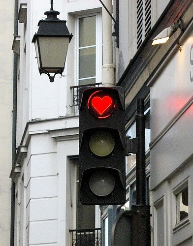
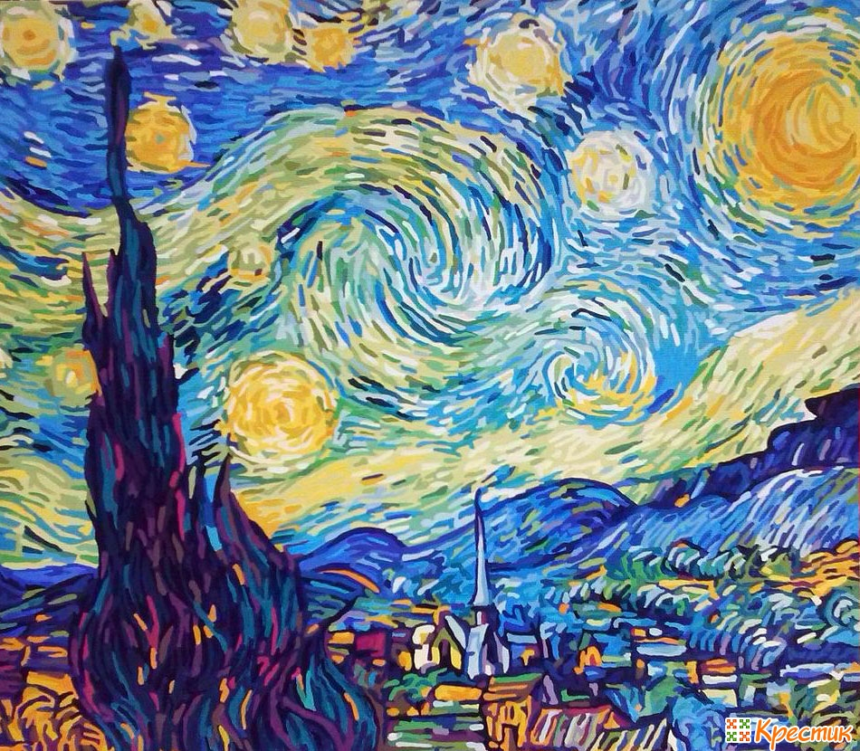

Color - as a symbol. Information about objects or phenomena, painted in a certain color, united in an image that made a color from the symbol. This symbol changes its meaning from the situation, but is always clear (it may not be realized, but accepted by the subconscious).
Red in the “heart” is a symbol of love. Red light of the traffic light - warning of danger.
With the help of color form can be conveyed to the reader more information. This is a linguistic understanding of color.
"I put on a black color,There is no hope in the soul, The world is hateful for me."
Color causes aesthetic pleasure or displeasure.
Aesthetics are expressed in art, even though it consists not only of color, but also of form and plot. You, not knowing why, say that it is beautiful, and this art cannot be called.
Color affects our nervous system, causes heartbeat to increase or slow down, affects metabolism, etc.
In a room painted blue, it seems cooler than it actually is. Because the blue color slows our heartbeat, plunges us into peace.
With each century, color brings more and more information for us, and now there is such a thing as “color of culture”, color of political movements and societies.